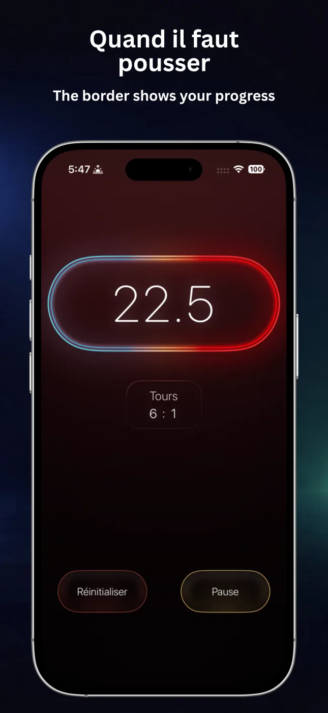
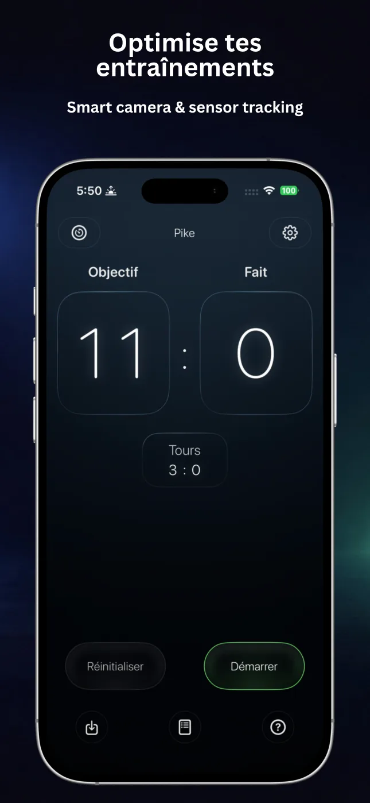
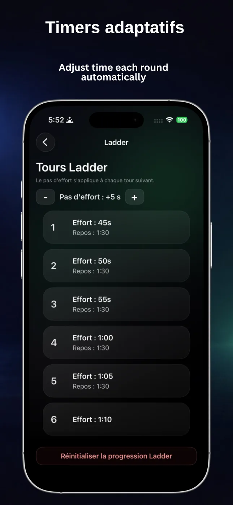
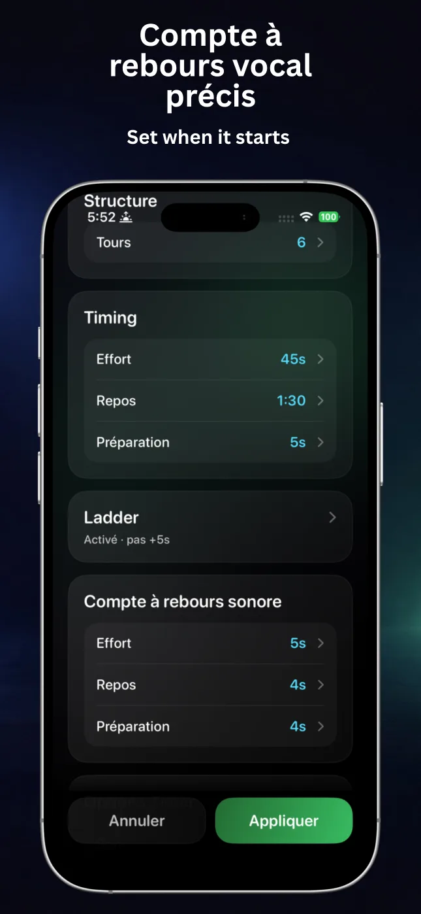
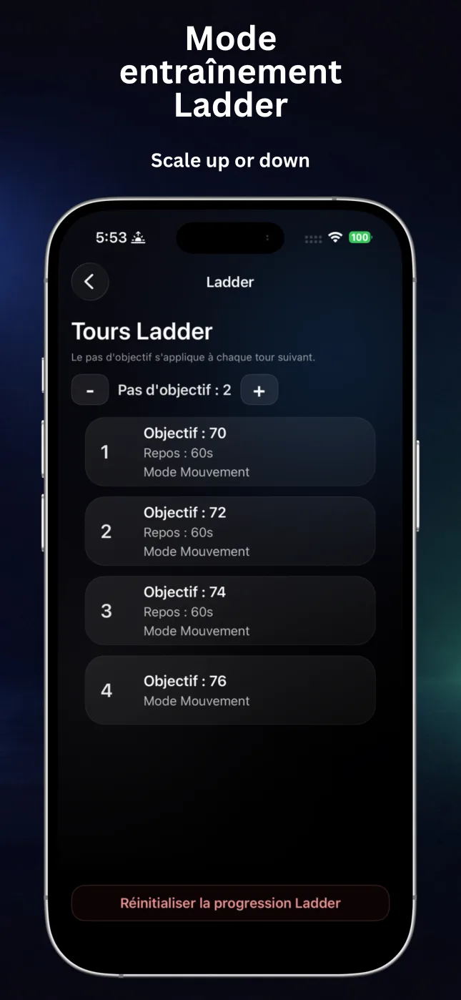
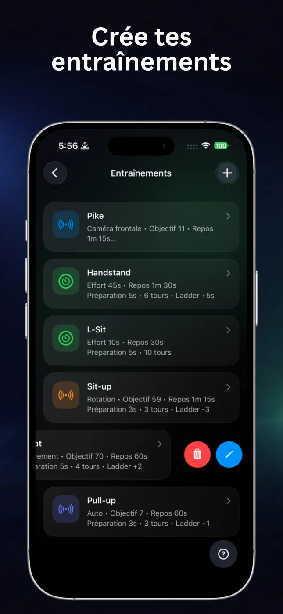

Comptage automatique
Utilisez le mouvement, la rotation, la détection automatique ou la caméra avant pour compter les exercices compatibles.
RepChime associe un minuteur d’intervalles précis à un comptage automatique des répétitions. Préparez la séance, commencez à bouger et laissez votre iPhone garder le rythme.

RepChime garde la structure de la séance visible et les commandes simples, que vous vous entraîniez au temps ou à l’objectif de répétitions.
Utilisez le mouvement, la rotation, la détection automatique ou la caméra avant pour compter les exercices compatibles.
Définissez Travail, Repos, Préparation et le nombre de tours pour vos circuits et séances d’intervalles.
Augmentez ou diminuez le temps et l’objectif de répétitions à chaque tour pour une progression structurée.
Restez concentré sur le mouvement grâce aux décomptes, annonces de tours et instructions vocales Pro.
Enregistrez vos configurations Minuteur et Compteur, modifiez vos favoris et démarrez rapidement.
Avec RepChime Pro, suivez le temps grâce aux Activités en direct sur l’écran verrouillé et la Dynamic Island.
Les grands chiffres, les phases claires et l’interface sombre restent lisibles entre les séries et à distance.





Les deux modes suivent le même parcours simple : configurez la séance, appuyez sur Démarrer et suivez le rythme visuel et sonore.
Créez des séances HIIT, de mobilité ou de maintien avec des temps distincts pour Travail, Repos et Préparation. Ajoutez tours, décomptes et échelles.
Fixez un objectif et choisissez la détection par mouvement, rotation, automatique ou caméra avant. RepChime prend en charge pompes, abdominaux, tractions et squats.
RepChime garde les intervalles et les répétitions visibles pendant l’entraînement. Cette vidéo montre une vraie séance de callisthénie avec l’app.
Workout With My Bro · RepChimeRepChime est un outil de fitness pour iPhone avec un minuteur HIIT configurable et un compteur qui peut suivre les répétitions compatibles à l’aide des capteurs ou de la caméra avant.
La fiche App Store actuelle mentionne les pompes, abdominaux, tractions et squats. Les modes de détection varient selon l’exercice ; la caméra avant est disponible pour les pompes.
Oui. Vous pouvez enregistrer des préréglages Minuteur et Compteur. RepChime Pro ajoute davantage d’emplacements et le parcours d’édition complet.
Non. Les préréglages et réglages sont conçus pour rester sur l’appareil. Apple gère les achats App Store et l’état des droits.
Configurez la séance une fois. RepChime gère le temps, le comptage et les signaux pendant que vous vous concentrez sur le mouvement.
Télécharger RepChime gratuitement